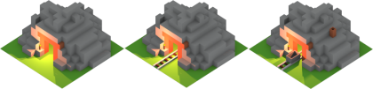
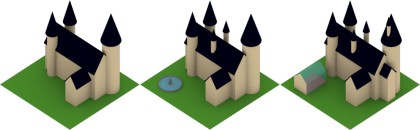
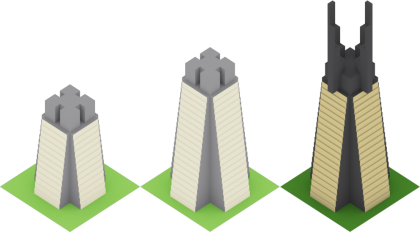
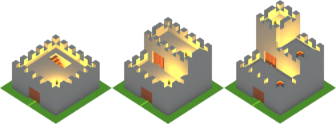
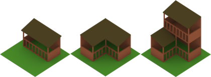
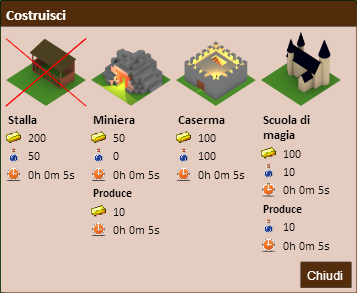
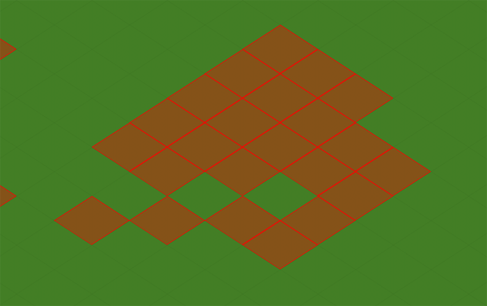
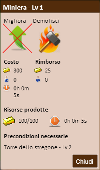

Manuale
2 Gli Edifici
Gli edifici sono il fulcro del tuo villaggio, conoscere bene le loro caratteristiche ti porterà velocemente alla vittoria.
Inizialmente avrai a disposizione solo tre edifici: una scuola di magia, una miniera e la torre dello stregone, ma potrai presto espandere il villaggio costruendo nuove tipologie di edifici.
Gli edifici si possono suddividere in tre categorie: produttivi, amministrativi e militari. Del primo gruppo fanno parte la Miniera e la Scuola di Magia, che producono le risorse base.
Questi edifici rappresentano la miniera.
Questi edifici rappresentano la scuola di magia.
Se sono disponibili delle risorse prodotte, apparirà un'icona a forma di scatola sopra l'edificio. È possibile raccoglierle cliccando con il tasto sinistro del mouse sull'edificio stesso. Al termine della raccolta, le risorse saranno immediatamente rese disponibili all'utilizzo.
Sarà necessario raccogliere le risorse assiduamente non solo perché i vari edifici avranno una capacità limitata di immagazzinamento, ma anche perché, qualora non vengano raccolte, potrebbero essere saccheggiate da un utente attaccante.
Nel secondo gruppo di edifici troviamo solamente la Torre dello Stregone, il cui unico scopo è quello di permettere la costruzione di altri edifici. È possibile avere un'unica Torre dello Stregone per villaggio, ed è presente sin dalla sua creazione. Questo edificio non sarà demolibile.
Questi edifici rappresentano la torre dello stregone.
Infine troviamo gli edifici militari, vale a dire la Caserma e la Stalla. Questo tipo di edifici permetterà la creazione e l'insediamento delle unità militari.
Questi edifici rappresentano la caserma.
Questi edifici rappresentano la stalla.
2.1 Costruzione di Edifici Torna Su
Potrai costruire un edificio sin dalla schermata principale. Da qui basta premere con il tasto destro del mouse una casella libera e selezionare l'edificio che si intende costruire.
Questo è il menu che permette la costruzione degli edifici.
Ogni edificio è costruito da un lavoratore. Se sono disponibili le risorse richieste ed un lavoratore libero, partirà l'effettiva costruzione dell'edificio. A seconda della costruzione scelta, sarà richiesta l'attesa di un tempo specifico per ogni edificio.
Per una trattazione completa delle risorse richieste ed i tempi si rimanda alla tabella delle statistiche degli edifici.
È presente anche una modalità di visualizzazione che permette di individuare con più facilità le caselle libere e le caselle occupate da altri edifici. È possibile accedere a tale modalità premendo il pulsante "Modalità costruzione" dalla barra degli strumenti.
Questo è quanto si vede sulla mappa quando la modalità di costruzione è attiva.
È possibile tornare alla normale visualizzazione del villaggio premendo il pulsante "Modalità normale" dalla barra degli strumenti.
2.2 Miglioramento e Distruzione Torna Su
Ogni edificio costruito ha la possibilità di essere migliorato o distrutto.
Per il miglioramento dell'edificio sarà necessario soddisfarne i prerequisiti indicati e possedere le risorse necessarie. Il miglioramento richiede l'attesa di un tempo diverso per ogni edificio. Migliorando l'edificio ne vengono potenziate le caratteristiche.
Per migliorare un edificio è necessario selezionare la relativa voce nel menu contestuale che appare al click dello stesso.
Per una trattazione completa delle risorse richieste ed i tempi si rimanda alla tabella delle statistiche degli edifici.
Per la demolizione, in maniera simile sarà necessario selezionare l'edificio e premere il relativo pulsante di demolizione.
Al termine della demolizione verrai rimborsato di metà delle risorse spese per l'ultimo miglioramento, o eventualmente di metà delle spese di costruzione.
Questo menu permette il miglioramento e la demolizione degli edifici.
Clicca qui per visualizzare la tabella delle statistiche degli edifici.